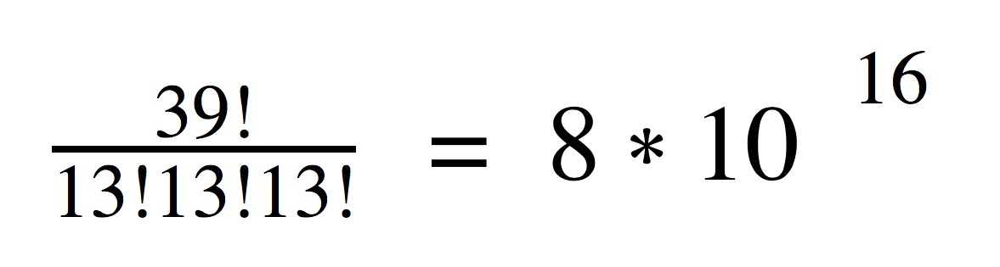

The goal of this project is to create an artificially intelligent agent that performs well in Hearts. Our intelligent program will overcome challenges of imperfect information digital game-play to compete successfully against players that use Greedy and Random approaches.
Unlike Chess, Checkers and Tic-Tac-Toe, games in which pieces are visible at all times, Hearts is a stochastic game of imperfect information, hinging on a partially observable environment, as each player’s hand is concealed from other players. If we could see our opponents’ cards, we would be able to use a standard search algorithm to play, perhaps even finding optimal strategies and solutions. Without this information, developing a winning strategy becomes a much more complicated problem.
Given the knowledge of the cards that have been played and the cards one currently holds in his or her hand, the number of potential distributions for the remaining cards is extremely large. In the worst case - during the first round - a player only knows the 13 hards in her hand, leaving an huge number of possible card configurations, as displayed below:
In any given trick, the player must choose from up to 13 actions, or cards to play. Enumerating possible outcomes becomes impossible given the size of the state space, making devising an optimal strategy impossible. Given that Hearts is a relatively easy game to learn, it is interesting to consider how hard it is to truly master.